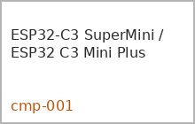
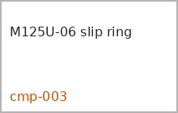
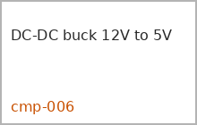
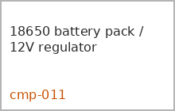

| ID | Картинка | Возможные названия компонента | Пояснение, зачем нужен | Ссылки |
|---|---|---|---|---|
| cmp-001 |  |
ESP32-C3 SuperMini / ESP32 C3 Mini Plus ESP32-C3 SuperMini ESP32 C3 Mini Plus ESP32-C3 SuperMini Plus |
Основной микроконтроллер. Управляет BLE, PWM подсветки, датчиком освещённости и логикой режима дня/ночи. | |
| cmp-002 |  |
VEML7700 sensor module VEML7700 ambient light sensor |
Датчик освещённости. Нужен для автоматического включения и регулировки яркости по внешнему свету. | |
| cmp-003 |  |
Senring M125-0205 slip ring (preferred) M125-0205 M125U-06 (fallback after current verification) M125 series slip ring mini capsule slip ring |
Токосъёмник внутри флагштока. M125-0205 остаётся предпочтительным двухканальным вариантом; M125U-06 допустим только как резерв после проверки допустимого тока и фактических размеров. | ссылки пока не добавлены |
| cmp-004 |  |
Round neon light 12V 16mm XUNATA Round Neon Light 12V round LED neon 16mm round neon strip |
Основная светящаяся лента по контуру рыбы. | ссылки пока не добавлены |
| cmp-005 |  |
MOSFET driver / LR7843 module LR7843 PC817 + LR7843 module logic-level MOSFET |
Силовой ключ, который коммутирует 12-вольтовую ленту и принимает PWM-сигнал от ESP. | ссылки пока не добавлены |
| cmp-006 |  |
DC-DC buck 12V to 5V mini560 5A TPS54560 module buck converter 12V to 5V |
Понижает 12 В до 5 В для питания ESP32-C3 и периферии. | ссылки пока не добавлены |
| cmp-007 |  |
Carbon fiber rod 5mm углепластиковый пруток 5 мм carbon fiber rod 5mm |
Горизонтальная спица, удерживающая флаг между подшипниками. | ссылки пока не добавлены |
| cmp-008 |  |
Bearing 6804-2RS (candidate) 6804-2RS подшипник 6804 |
Базовый кандидат на подшипники вращения навершия. Точные размеры требуют перепроверки после фактических измерений. | ссылки пока не добавлены |
| cmp-009 |  |
NTC 10k B3950 NTC 10k B3950 thermistor |
Контроль температуры внутри отсека электроники. Полезен для испытаний и возможной тепловой защиты. | ссылки пока не добавлены |
| cmp-010 |  |
M12 waterproof connector M12 connector герметичный разъём M12 waterproof connector |
Герметичное отсоединяемое соединение провода, выходящего из корпуса к флагу. | ссылки пока не добавлены |
| cmp-011 |  |
18650 battery pack / 12V regulator 6x18650 pack 12V regulated battery pack |
Источник питания всей системы. Пользователь уточнил, что проект питается от 6 аккумуляторов 18650 с последующей стабилизацией до 12 В. | ссылки пока не добавлены |
| cmp-012 |  |
TPU 95A and TPU 85A TPU 95A TPU 85A |
Мягкие печатные детали: 95A для функциональных мягких элементов, 85A для прокладок и уплотнений. | ссылки пока не добавлены |